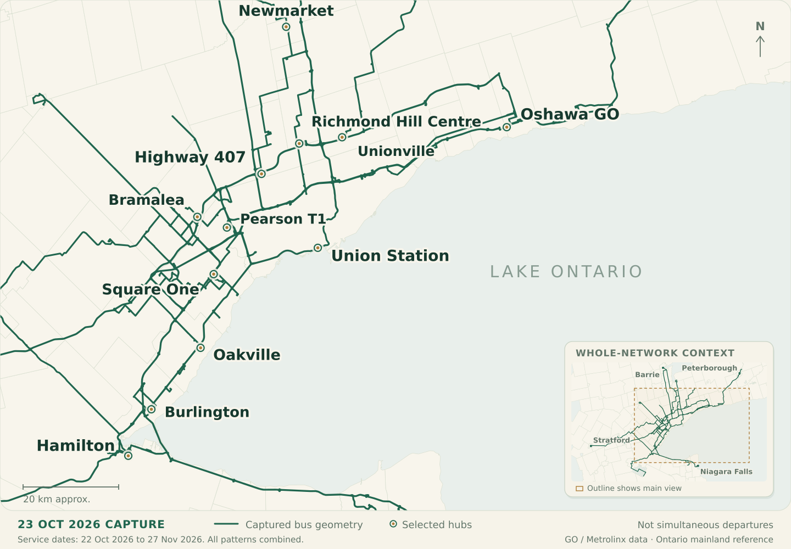

Every route
has a history.
The stops changed. The network grew. Explore the GO bus routes that connected a region, one documented version at a time.
23 October 2026Original evidence.
Open to exploration.

Along Highway 407.
Follow the changing connections between Richmond Hill, York University, Bramalea and Pearson.
Find your route.
Active lines, retired numbers and new uses for old names.
Choose a map to explore, or a PDF to keep.
Two more chapters.
Local corridors with their own histories. Their timetable identifiers are kept separate from later operating route numbers.
Yonge C
Follow the North Yonge local corridor through its surviving timetables.
The date is
part of the story.
A route number can describe different journeys in different years. Every version here carries its evidence date, its ordered stops and the sources behind it.
How the archive was madeA captured network
Original GO feeds preserve scheduled branches, complete stop sequences and service dates. The four archive captures are from 2016, 2022, 2023 and 2026.
A reconstructed journey
Older timetables establish dated routes and major stops. Dashed lines connect known stop areas; corridor reconstructions are labeled explicitly.
A visible gap
Unlocated stops stay in the list. Missing versions stay acknowledged. A reference station location does not establish an old bus bay.
Take the atlas
with you.
Start with the illustrated guide. Then choose from 62 route and legacy volumes, with dated maps, numbered stop lists and bookmarks.
Read the PDF guideReadable on screen.
Ready to save or print.
Linked to the original evidence.